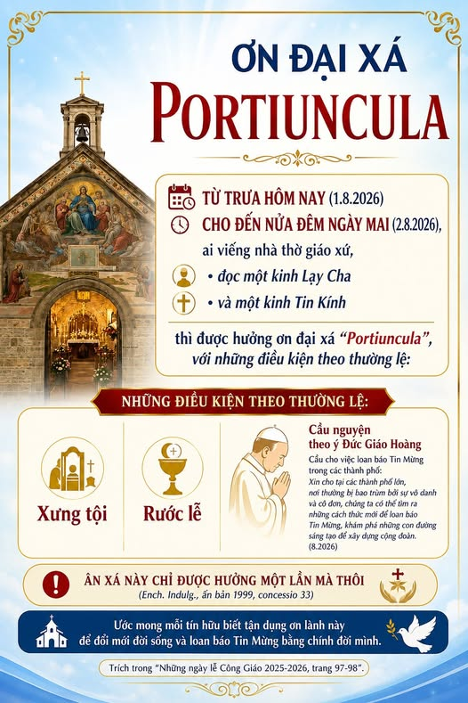

ƠN ĐẠI XÁ PORTIUNCULA [Trưa 01/08 - Đêm 02/08]

Ơn Đại Xá Portiuncula là Ơn mà Thánh Phanxicô thành Assisi đã xin Chúa Giêsu ban cho các tín hữu.
PORTIUNCULA nghĩa là “Thửa Đất Nhỏ”. Đây là thửa đất gần Assisi mà năm 1210 các đan sĩ Biển Đức đã nhượng lại để Thánh Phanxicô và các anh em dùng làm nơi tu trì. Ở đó có một nhà nguyện nhỏ đổ nát. Thánh Phanxicô đã cùng các anh em xây dựng lại. Một Đại Thánh Đường uy nghi được xây dựng lên khoảng giữa những năm 1569-1679 và mang tước hiệu “Đức Bà Các Thiên Thần”.
Ban đầu, từ năm 1216, ơn đại xá Portiuncula chỉ được ban cho những ai viếng nhà nguyện Portiuncula. Về sau, Ơn này được mở rộng đến các Nhà Thờ thuộc Dòng Anh Em Hèn Mọn (Dòng Phanxicô), và cuối cùng, được mở rộng đến các Nhà Thờ trên toàn thế giới.
Ta có thể lãnh nhận Ơn Đại Xá thông qua:
- Viếng Nhà Thờ Giáo xứ
- Đọc 1 Kinh Lạy Cha + 1 Kinh Tin Kính
*Cùng với các điều kiện thông thường:
- Xưng tội: giục lòng thống hối.
- Rước Mình Thánh Chúa.
- Cầu nguyện theo ý Đức Giáo Hoàng: Cầu cho Hội Thánh. Xin cho Hội Thánh lãnh nhận từ Chúa Thánh Thần, ân sủng và sức mạnh để tự canh tân dưới Ánh Sáng Tin Mừng.